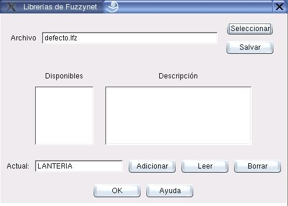

Administración de Librerías
El cuadro de diálogo que muestra la figura 8.1 se emplea para administrar las librerías. A él se accede a partir de la opción Librería en los cuadros de diálogo de edición de Metodologías (sección 4), Casos (sección 5) y Variables (sección 7).
Los principales componentes de este cuadro de diálogo se explican a continuación:
- Seleccionar:
- Permite cargar una librería desde el disco.
- Salvar:
- Permite salvar la información de la librería en el disco.
- Disponibles/Descripción:
- Mustra el listado de elementos almacenados en la librería. Si el cuadro de diálogo se ha llamado desde el cuadro de edición de Metodologías, sólo se mostrarán las metodologías disponibles. De igual forma, sólo se mostrarán los Casos y las Variables cuando haya sido llamado desde los cuadros de diálogo respectivos.
- Actual:
- Muestra información sobre el elemento que se estaba editando cuando se lamó el cuadro de diálogo.
- Adicionar:
- Adiciona el elemento actual a la librería. La librería debe salvarse para que la adición tenga efecto en el disco.
- Leer:
- Carga en el elemento actual la información del elemento seleccionado en el listado Disponibles.
- Borrar:
- Elimina de la librería el elemento seleccionado en el listado Disponibles. La librería debe salvarse para que el cambio tenga efecto en el disco.
Figura 8.1:
Diálogo para administración de librerías
|

|
Oscar Duarte
2005-10-17